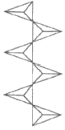
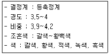
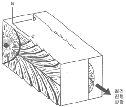
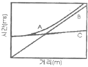
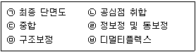

응용지질기사 (2015-05-31 기출문제)
1과목: 암석학 및 광물학
1. 현무암과 같은 고철질 광물이 풍부한 암석이 광역변성작용을 받았을 때 가장 고변성도의 변성분대에서 나타나는 변성광물은?
- 녹염석
- 녹니석
- 휘석
- 각섬석
(정답률: 43%)

2. 북한산에서 채취한 화강암의 암석박편에서 정누대구조(normal zonal structure)를 보여주는 사장석의 결정이 관찰되었다. 이 결정의 중심부에서 연변부로 가면서 함량이 상대적으로 증가하는 원소는?
- Ca
- Fe
- Mg
- Na
(정답률: 79%)
3. 퇴적층의 표면을 따라 유수 또는 물과 함께 운반되는 물체에 의해 긁히거나 침식을 받아 형성된 침식구조에 해당하는 것은?
- 저면구조
- 사층리
- 연흔
- 불꽃구조
(정답률: 60%)
4. 직경 64mm 이상의 둥근 쇄설물로 주로 이루어진 세립질의 화성쇄설암은?
- 응회암
- 집괴암
- 고회암
- 화산력 응회암
(정답률: 65%)
5. 화성암을 구성하고 있는 조암광물의 크기(입도)는 주로 무엇에 의하여 결정되는가?
- 마그마의 밀도
- 마그마의 온도
- 마그마의 냉각속도
- 마그마의 화학성분
(정답률: 90%)
6. 퇴적물이 퇴적된 이후에 받는 모든 물리적, 무기화학적, 생화학적인 변화를 총칭해서 말하는 것은?
- 분화작용
- 변성작용
- 풍화작용
- 속성작용
(정답률: 71%)
7. 점성이 가장 큰 마그마(magma)에서 형성된 암석은?
- 조면암(trachyte)
- 유문암(rhyolite)
- 안산암(andesite)
- 현무암(basalt)
(정답률: 78%)
8. 섬장암과 섬록암 사이의 중간적인 조성을 가진 심성암으로서 거의 같은 양의 알칼리장석과 사장석을 포함하는 암석은?
- 화강섬록암
- 토날라이트
- 몬조나이트
- 반려암
(정답률: 74%)
9. 바로비안 변성상 계열의 변성상 변화를 나타낸 것은?
- 불석상→조장석→녹염석 혼펠스상→각섬석 혼펠스상→휘석혼펠스상→세니디아이트상
- 불석상→프레나이트-펌펠리아이트상→녹색편암상→각섬암상→백립암상
- 불석상→프레나이트-펌팰리아이트상→청색편암상→녹색편암상→각섬암상
- 불석상→프레나이트-펌펠리아이트상→청색편암상→에클로자이트상
(정답률: 73%)
10. 편마암에 대한 설명으로 옳은 것은?
- 엽리가 잘 발달된 조립 입상 변성암이다.
- 원암은 주로 석회암이다.
- 주 구성광물은 감람석-휘석-사장석이다.
- 매몰변성작용과 동반되어 주로 생성된다.
(정답률: 68%)
11. 다음 중 완전고용체(연속고용체)에 속하는 광물은?
- 감람석, 사장석
- 석영, 정장석
- 암염, 석영
- 방해석, 아라고나이트
(정답률: 82%)
12. 자연에서 광물이 성장할 때 불규칙한 성장을 하게 되면 독특한 모양을 가지게 되는 경우가 있다. 광물 결정의 성장이 우각이나 능에서 주로 일어날 때 만들어지는 불완전한 결정은?
- 수지상 결정
- 인터그로스
- 해정
- 누대상 결정
(정답률: 65%)
13. 대장상(enantiomrphy)에 관한 설명으로 옳은 것은?
- 대장상 관계에 있는 두 결정형을 정형과 부형이라고 한다.
- 반영조작으로 대칭이 되지 않고 회전시키면 대형관계임을 알 수 있다.
- 결정축을 잡는 방향에 따라 모양이 비슷하지만 서로 다른 현이 나타나는 것이다.
- 대장상은 대칭면이나 대칭심이 없이 대칭축만 있는 결정에서 나타난다.
(정답률: 58%)
14. 다음 중 안정된 이온결정이 갖추어야 할 다섯가지 조건을 제시하는 이론은?
- 폴링의 규칙
- 오일러의 법칙
- 보웬의 법칙
- 골드슈미트의 광물학적 상률
(정답률: 84%)
15. 다음 중 불투명 광물을 반사광편광현미경으로 관찰하여 식별할 때 이용하는 광물의 물리적 성질이 아닌 것은?
- 이방성
- 다색성
- 반사도
- 복반사
(정답률: 70%)
16. 어떤 광물내에서 빛의 전달속도가 200,000km/sec 였다면 이 광물의 굴절률은 얼마인가? (단, 공기 중에서 빛의 속도는 300,000km/sec이다.)
- 0.67
- 1.0
- 1.5
- 2.5
(정답률: 60%)
17. 다음 중 면심공간격자의 단위포 함량(Z)은?
- Z=1
- Z=2
- Z=3
- Z=4
(정답률: 63%)
18. 규산염광물은 기본 구조단위인 SiO4 사면체의 결합 방식에 따라 구분한다. 아래 그림은 사면체가 한 꼭지점 산소를 공유하면서 한 방향으로 연결된 사슬구조를 이룬다. 이를 이노규산염 광물 또는 단쇄형 광물이라 하며, 휘석이 그 예이다. 이 때 Si:O의 비는 얼마인가?

- 1:2
- 1:3
- 1:3.5
- 1:4
(정답률: 72%)
19. 다음과 같은 특징을 가진 광물은 어느 것인가?

- 황철석
- 방연석
- 전기석
- 섬아연석
(정답률: 43%)
20. 주기율표에 있어서 각 주기의 첫째 자리, 즉, la족에 속하는 원소들로서 Li, Na, K, Rb, Cs, Fr 등이며, 화합물에서는 원자가가 +1이다. 일반적으로 열과 전기에 대하여 전도성이 높고, 금속광택, 낮은 경도, 전성, 연성 등이 특징인 원소들을 무엇이라 부르는가?
- 알칼리 금속
- 알칼리토 금속
- 천이 원소
- 희토류 원소
(정답률: 78%)
2과목: 구조지질학
21. 판의 이동속도를 추정하는데 이용될 수 없는 것은?
- 암석의 절대연령
- 지각 열류량
- 지자기 이상
- 열점
(정답률: 62%)
22. 중생대 백악기 퇴적 분지가 아닌 것은?
- 경상 분지
- 공주 분지
- 음성 분지
- 평남 분지
(정답률: 47%)
23. 주향과 경사가 N35°E/50°NW인 단층면에 나타날 수 없는 단층조선의 선주향 경사방향(plunge)은?
- 북서방향
- 북동방향
- 남동방향
- 남서방향
(정답률: 67%)
24. 대양저 산맥(ocean ridges)에 대한 설명 중 틀린 것은?
- 열곡이 발달한다.
- 높은 열류량을 나타낸다.
- 수직단층이 발달한다.
- 천발지진이 자주 발생한다.
(정답률: 74%)
25. 다음은 Hodgson(1961)의 이상적인 절리발달양상을 보여주는 그림이다. 그림에서 a, b, c 세 주응력축의 이름을 순서대로 옳게 나열한 것은? (단, σ1은 최대주응력, σ2는 중간주응력, σ3는 최소주응력이다.)

- σ1, σ2, σ3
- σ1, σ3, σ2
- σ2, σ1, σ3
- σ2, 3, σ1
(정답률: 50%)
26. 해양판이 맨틀로 하강하는 섭입대(subduction zone)에서 약 700km 깊이까지 심발지진의 발생이 가능한 원인은?
- 각섬암-에클로자이트 상전이
- 섭입되는 해양판의 부분용융
- 고압변성작용
- 차가운 해양판의 섭입으로 인한 낮은 지온구배
(정답률: 81%)
27. 다음의 지구조 중 성격이 나머지 셋과 다른 것은?
- 하와이군도
- 안데스산맥
- 인도네시아열도
- 알프스산맥
(정답률: 67%)
28. 지질시대를 구분하는데 가장 중요하게 취급되는 지질구조는?
- 단층
- 부정합
- 습곡구조
- 절리
(정답률: 82%)
29. 최대 주응력이 140MPa, 최소 주응력이 60MPa일 때 최소 주응력축과 이루는 각(θ)이 40°인 면에 작용하는 수직응력(σn)과 전단응력(σs)의 합은 얼마인가?
- 134MPa
- 146MPa
- 158MPa
- 162MPa
(정답률: 53%)
30. 지질시대의 층서구분 단위와 이들의 표시법이 적절하게 연결된 것은?
- 암층서 단위-이언(Eon), 대(Era), 기(Period), 세(Epoch), 절(Age)
- 암층서 단위-대층(Erathem), 계(System), 통(Series), 조(Stage)
- 생층서 단위-층군(Group), 층(Formation), 층원(Member)
- 시층서 단위-대층(Erathem), 계(System), 통(Series), 조(Stage)
(정답률: 53%)
31. 정단층에 의해 주로 형성되는 지질 구조는?
- 돔과 분지(dome and basin)
- 지구-지루(graben-horst)
- 용식요지(swallow hele)
- 클리페(klippe)
(정답률: 82%)
32. 우리나라의 동해(East Sea)는 어느 것에 해당되는가?
- 호상열도(Island arc)
- 배호분지(Back-arc)
- 전호분지(Fore-arc basin)
- 전호해령(Fore-arc ridge)
(정답률: 72%)
33. 하천의 발달 형태가 직선 또는 직각을 이루고 있는 부분이 있다. 이는 어느 것의 영향을 받아 형성된 것인가?
- 돔(dome) 구조
- 저반(batholith)
- 주향이동단층(strike-slip fault)
- 화산함몰체(cauldron)
(정답률: 83%)
34. 트러스트 단층(thrust fault)과 관련된 설명으로 옳은 것은?
- 듀플렉스(duplex)는 여러 조의 트러스트 단층들이 바닥 트러스트(basal thrust)로부터 갈라져 나와 부채꼴 모양을 이루는 것이다.
- 지구(graben)는 트러스트 시스템에서 사방이 단층에 의해 둘러싸인 암체이다.
- 브랜치 선(branch line)은 하나의 트러스트 단층이 두 개의 단층으로 갈라지는 곳이다.
- 트러스트 단층은 경사각이 고각(45°이상)인 역단층이다.
(정답률: 48%)
35. 지구의 부피에 있어 가장 많은 부분을 차지하는 것은?
- 지각
- 맨틀
- 외핵
- 내핵
(정답률: 87%)
36. 다음에 나열된 동위원소들 중 가장 젊은 지질연대를 측정할 수 있는 것은?
- 87Rb→87Sr
- 238U→206Pb
- 235U→207Pb
- 14C→14N
(정답률: 74%)
37. 습곡의 중첩구조 중 선행 습곡구조가 수평선의 습곡축을 가진 횡와습곡인 경우, 선행 습곡구조의 습곡축과 직각을 이루는 수평선을 습곡축으로 하고, 수직의 습곡 축면을 가진 2차 습곡에 의해 발달할 수 있는 간섭 구조는 무엇인가?
- 중복 중첩 습곡(redunant superposition)
- 돔과 분지 형태(dome and basin pattern)
- 돔-초승달-버섯 형태(dome-crescent-mushroom patterm)
- 재습곡 형태(refolded fold)
(정답률: 61%)
38. 대륙이동에 관련된 학성 또는 이론의 발전과정을 옳게 나열한 것은?
- 대륙이동설-해저확장설-판구조론
- 해저확장설-대륙이동설-판구조론
- 대륙이동설-판구조론-해저확장설
- 해저확장설-판구조론-대륙이동설
(정답률: 75%)
39. 지각판의 경계부(plate boundary)가 아닌 것은?
- 수렴경계
- 발산경계
- 변환단층경계
- 지향사경계
(정답률: 75%)
40. 산사태의 발생 원인에 해당하지 않는 것은?
- 해수의 침입에 의해 발생
- 폭우 등에 의해 지표가 물로 포화되고 불안정화되어 발생
- 인위적인 과도한 절대에 의해 사면이 불안정화 될 경우에 발생
- 큰 지진으로 인해 발생
(정답률: 90%)
3과목: 탐사공학
41. 방사능 탐사에 대한 설명으로 옳지 않은 것은?
- 방사능의 측정 단위로는 렌트겐이 사용되며, γ(gamma)선은 X선의 측정 단위인 큐리를 사용한다.
- 방사능 붕괴시 α, β 입자가 방출되면 모원소의 원자번호는 바뀌면서 새로운 원소로 변환된다.
- 방사능 탐사에서는 주로 γ선을 이용한다.
- 일반적으로 많이 사용되는 방사능 측정 기기에는 가이거 계수기와 신틸레이션 미터가 있다.
(정답률: 54%)
42. 굴절법 탄성파 탐사에서 숨은층 문제가 발생하는 원인이 아닌 것은?
- 속도역전
- 얇은 층의 존재
- 부적합한 지오폰 간격
- 낮은 임피던스 간격
(정답률: 50%)
43. 전류전극간의 간격을 전위전극간의 간격보다 매우 크게 하고 전류전극의 중심에 전위전극을 위치시켜 수직적인 전기비저항의 변화를 탐지하는데 편리한 특징을 갖는 전기탐사의 전극 배열법은?
- 슐럼버저 배열
- 쌍극자 배열
- 단극-쌍극자 배열
- 리 배열
(정답률: 72%)
44. 중력 측정지점은 기준면으로부터 2477m 높이에 위치하고 있다. 측정 중력값 및 표준 중력값은 각각 981.9567gal과 982.7270gal 이었다. 프리에어 이상은 얼마인가?
- 3.7mgal
- 4.5mgal
- -5.9mgal
- -7.2mgal
(정답률: 49%)
45. 지하투과 레이다 탐사(GPR)에서 반사계수는 다음 중 어느 물성과 관련이 있는가?
- 유전율
- 투자율
- 대자율
- 전기전도도
(정답률: 74%)
46. 백분율 주파수 효과(Precent frequency effect)가 사용되는 물리탐사법은?
- 자연전위탐사
- 유도분극탐사
- 탄성파탐사
- 중력탐사
(정답률: 55%)
47. 지구화학탐사에서는 토양을 기후에 따라 분류할 수 있는데 성숙토양 단면이 잘 발달되며 토양의 성질은 주로 기후와 식생에 의해 결정되는 토양은?
- 성대성 토양(zonal soil)
- 간대성 토양(intrazonal soil)
- 비성대성 토양(azonal soil)
- 잔류 토양(residual soil)
(정답률: 77%)
48. 물리검층으로 구한 유정의 검층자료로부터 저류가능 지층을 판별하기 위해 필요한 정보가 아닌 것은?
- 공극률
- 유체포화율
- 투자율
- 투수율
(정답률: 65%)
49. 다음은 탄성파 발생원이다. 해상 탐사용으로 가장 많이 사용되는 비폭발성 에너지원은?
- 바이브로사이스(Vibroseis)
- 섬퍼(Thumper)
- 웨이트드롭(Weight-drop)
- 에어건(Air-gum)
(정답률: 66%)
50. 검층기록이 지층의 셰일함량을 주로 대표하여 셰일기선(shale base line)을 찾는데 이용되는 물리검층법은?
- 음파 검층
- 자연전위 검층
- 밀도 검층
- 전자 검층
(정답률: 56%)
51. 지열의 특성에 대한 설명으로 옳지 않은 것은?
- 열전도도는 화강암보다 자철석이 더 높다.
- 지열유량은 제3기의 조산대보다 선캠브리아기의 순상지가 더 높다.
- 지구 내부의 열에너지는 대부분 반감기가 매우 긴 방사선 동위원소의 핵분열에 의한 것으로 알려져 있다.
- 대양에서의 지열발산이 대륙 쪽보다 더 넓게 분포한다.
(정답률: 66%)
52. 시추공 화상처리시스템(BIPS)과 시추공 텔레뷰어(Borehole Televiewer)에 대한 설명으로 옳지 않은 것은?
- 시추공 화상처리시스템은 광학적 영상을, 시추공 텔레뷰어는 물성분포에 관한 영상을 제공한다.
- 시추공 화상처리시스템은 공내수가 없는 경우 뚜렷한 영상을 얻을 수 있으나 시추공 텔레뷰어는 측정이 불가능하다.
- 시추공 텔레뷰어는 절리, 파쇄대의 분포에 관한 영상을 제공하며 실제 암석의 색상을 확인할 수 있다.
- 시추공 화상처리시스템은 사면부와 같이 공내수가 없는 경우 불연속면의 형태 및 암종에 대한 정보를 얻는데 사용된다.
(정답률: 64%)
53. 어느 지역에서 굴절법 탄성파 탐사를 실시하여 제1층의 탄성파 속도가 1000m/s, 제2층의 탄성파 속도가 2000m/s를 보이는 수평 2층 구조임을 확인하였다. 이 때 절편시간(intercept time)이 20ms일 때 제1층의 두께는 얼마인가?
- 12m
- 22m
- 32m
- 42m
(정답률: 43%)
54. 다음 전자탐사법 중 탄성파 탐사와 유사한 방법으로 탐사자료를 획득하고 처리하는 방법은 무엇인가?
- MT 탐사법
- TEM 탐사법
- VLF 탐사법
- GPR 탐사법
(정답률: 78%)
55. 주파수영역 전자탐사에 대한 설명으로 옳은 것은?
- 심부 탐사를 위해서는 고주파수를 사용한다.
- 침투심도는 주파수의 제곱근에 반비례한다.
- 매질의 전기비저항이 높을수록 가탐심도는 얕다.
- 주파수영역 전자탐사는 주로 100MHz 이상의 주파수를 사용한다.
(정답률: 53%)
56. 다음 중 친철원소에 해당하는 것은? (단, Goldschmidt의 분류에 의함)
- 라돈(Rn)
- 니켈(Ni)
- 바나듐(V)
- 텅스텐(W)
(정답률: 72%)
57. 중력탐사 방법의 적용으로 옳지 않은 것은?
- 카르스트 지역의 석회암 함몰대와 공동 탐지
- 시가지에서 불규칙한 기반암면의 깊이 추정
- 지표면과 평행한 일정한 두께의 판상 불연속면 탐지
- 매립 전후의 지형도를 활용한 매립지 규모 확인
(정답률: 68%)
58. 암석이 잔류자기를 갖게 되는 현상을 자연잔류자화라고 하는데, 자연잔류자화 가운데 자성물질이 높은 온도로부터 큐리 온도를 거쳐 서서히 식어갈 때 외부 자기장에 의하여 강하고도 안정된 잔류자기를 얻게 되는 현상을 무엇이라고 하는가?
- 상자성 잔류자화
- 강자성 잔류자화
- 열 잔류자화
- 등온 잔류자화
(정답률: 81%)
59. 직접파, 반사파, 굴절파가 지오폰에 도달하는 것을 나타낸 주시곡선에서 A, B, C는 순서대로 각각 무엇인가? (단, 단일 경계면 위에서 탄성파 탐사를 수행하고, 지오폰을 일직선상에 파원으로부터 일정한 간격을 두고 전개하였다고 가정한다.)

- 직접파-반사파-굴절파
- 굴절파-직접파-반사파
- 반사파-직접파-굴절파
- 반사파-굴절파-직접파
(정답률: 60%)
60. 반사법 탄성파 탐사자료의 처리 계통 순서를 바르게 배열한 것은?

- ㉡-㉥-㉢-㉤-㉣-㉠
- ㉡-㉢-㉥-㉣-㉤-㉠
- ㉥-㉡-㉣-㉢-㉤-㉠
- ㉥-㉡-㉢-㉤-㉣-㉠
(정답률: 48%)
4과목: 지질공학
61. 풍화에 따른 암석의 물리적ㆍ역학적 변화에 대한 설명으로 옳지 않은 것은?
- 풍화작용을 받은 암석의 탄성파 속도는 감소한다.
- 풍화가 심할수록 암석의 탄성계수 값은 낮아진다.
- 풍화가 진행되면 암석의 인장강도는 줄어든다.
- 풍화가 진행되면 암석의 투수율은 낮아진다.
(정답률: 81%)
62. 연약지반 개량공법으로 사용되는 분사교반공법은 어느 원리를 이용한 것인가?
- 고결
- 탈수
- 치환
- 다짐
(정답률: 64%)
63. 사면안정공법 중 안전율증가법(억지공)이 아닌 것은?
- 앵커공법
- 압성토공법
- 옹벽공법
- 배수공법
(정답률: 58%)
64. 삼축압축시험에 관한 설명으로 옳은 것은?
- 세 개의 주응력 중 두 개의 주응력은 항상 0(zero)이다.
- 봉압이 증가하더라도 암석의 파괴강도는 변하지 않는다.
- 봉압이 증가함에 따라 암석의 거동은 점파 연성거동을 보이게 된다.
- 봉압이 증가함에 따라 최대강도 이후 급작스런 파괴가 발생한다.
(정답률: 48%)
65. 시추를 통하여 불연속면의 방향성 자료를 얻을 수 있는 시험은?
- 시추코어 관찰
- 공내재하시험
- 시추공 텔레뷰어 시험
- 슬레이크 내구성 시험
(정답률: 71%)
66. 지형의 특성에 따라 충적층을 다음과 같이 구분할 때 일반적으로 층적층의 두께가 가장 두꺼운 지층은?
- 선상지
- 해안평야
- 범람원
- 곡간평야
(정답률: 69%)
67. RMR(Rcok Mass Rating)분류법을 근거로 하여 SMR(Slope Mass Rating)값을 획득할 때 고려되는 요소가 아닌 것은?
- 사면과 불연속면 사이의 주향의 상관성
- 사면의 굴착방법
- 사면의 경사와 불연속면의 경사의 상관성
- 사면 구조물의 중요도
(정답률: 65%)
68. 어떤 피압대수층의 공극률이 32%, 대수층 구성입자의 압축률은 1.8×10-8m2/N, 물의 압축률은 4.6×10-10m2/N이다. 이 대수층의 비저류계수(Specific storage)는? (단, 물의 밀도는 1,000kg/m3, 중력가속도는 9.8m/s2)
- 1.78×10-4m-1
- 2.81×10-4m-1
- 4.70×10-5m-1
- 5.03×10-5m-1
(정답률: 36%)
69. 토질시험법 중 사운딩(sounding)에 대한 설명으로 옳지 않은 것은?
- 로드 선단의 저항체를 땅속에 넣어 관입, 회전, 인발 등의 저항으로 지반의 강도 및 밀도 등을 구하는 시험이다.
- 사운딩은 크게 정적시험과 동적시험으로 구분한다.
- 동적시험으로는 표준관입시험이 대표적이다.
- 베인시험은 샤질토 지반에 적당한 시험법으로 원위치 압축강도 측정에 사용된다.
(정답률: 55%)
70. 암반의 시간 의존적인 특성으로 옳지 않은 것은?
- 크리프(creep) 현상
- 응력완화(stress relaxation)
- 소성(plasticity)
- 피로(fatigue) 현상
(정답률: 72%)
71. 분급도가 양호하며 세립토의 함량이 5% 미만인 모래를 통일분류법(USCS)에 의해 분류할 때 올바르게 표현한 것은?
- SW
- SP
- SM
- SC
(정답률: 78%)
72. 어느 흙 속에 최대주응력 30t/m2, 최소 주응력 10t/m2 이 작용하고 있다. 이 흙에 작용하는 최대전단응력의 값은 얼마인가?
- 10t/m2
- 20t/m2
- 30t/m2
- 40t/m2
(정답률: 52%)
73. Q-system에 의한 암반분류에서 RQD가 5%, 절리군의 수에 의한 계수 Jn=15, 절리의 거칠기 계수 Jr=1.5, 절리의 변질 계수 Ja=1.0, 지하수 보정 계수 Jw=1.0, 응력저감계수 SRF=5.0일 때 Q 값은?
- 0.1
- 0.2
- 0.4
- 1.0
(정답률: 50%)
74. 공극비 0.7, 입자의 비중이 2.65인 흙의 수중단위중량은 얼마인가?
- 0.77t/m3
- 0.97t/m3
- 1.47t/m3
- 1.97t/m3
(정답률: 43%)
75. 터널의 안전하고 효율적인 시공을 위해 터널의 지보재와 병용하여 사용되는 보조공법 중 천단부의 안정을 위한 지반강화를 목적으로 적용하는 공법이 아닌 것은?
- 선진수평보링
- 훠폴링
- 파이프루프
- 강관다단그라우팅
(정답률: 59%)
76. 암반 사면의 공학적 지질도를 작성하는데 있어서 중요한 기재사항에 해당하지 않는 것은?
- 암반 사면의 높이, 연장, 경사도 등의 규모
- 불연속면의 방향, 간격, 크기 등의 분포 특성
- 절취 사면을 구성하는 암반의 풍화정도
- 절취 사면 및 상부사면의 식생 밀도
(정답률: 74%)
77. 시추조사법에 대한 설명으로 옳지 않은 것은?
- 오거 시추(auger boring)는 공내에 송수하지 않고 굴진하여 연속적으로 흙의 교란시료를 얻을 수 있다.
- 수세식 시추(wash boring)는 장치가 간단하고 경제적이며 매우 연약한 점토 및 세립의 사질토에 적당하다.
- 충격식 시추(percussion boring)는 연약한 점토 및 느슨한 사질토에 적당하고 시추공 바닥면 아래의 흙이 교란되지 않는 장점이 있다.
- 회전식 시추(rotary boring)는 토사에서 암반까지 적용범위가 넓고 암석시료를 채취할 수 있어 지반조사에 가장 널리 사용된다.
(정답률: 83%)
78. 흙의 연경도(consistency)에 대한 설명 중 틀린 것은?
- 액성한계는 액체상태로 존재하는 최소의 함수비이다.
- 소성지수는 액성한계와 소성한계의 차를 의미한다.
- 수축한계는 고체상태의 최대 함수비이다.
- 소성한계는 흙이 소성상태로 존재할 수 있는 최대의 함수비이다.
(정답률: 59%)
79. 흙의 투수계수를 측정할 수 있는 시험방법에 해당하지 않는 것은?
- 정수위 투수시험
- 변수위 투수시험
- 압력터널시험
- 압밀시험
(정답률: 61%)
80. 지반침하의 형태에 따른 분류 중 골형 침하(trough subsidence)의 특징으로 옳지 않은 것은?
- 급경사층에서 발생하는 경향이 있다.
- 오랜 시간에 걸쳐 서서히 발생한다.
- 넓은 지역에 걸쳐 발생한다.
- 지표 침하량의 크기가 침하 면적에 비해 작다.
(정답률: 75%)
5과목: 광상학
81. 건설분야에 이용되는 골재자원의 필요조건으로 옳지 않은 것은?
- 물리, 화학적으로 안정성을 가질 것
- 경도가 높아 내구성이 있을 것
- 구성입자의 분급 정도가 낮을 것
- 마모에 대한 저항도가 높을 것
(정답률: 83%)
82. 선캄브라아기의 염기성 화성암류의 분화에 의한 정마그마 광상에 해당하는 것은?
- 소연평도 지역 철광상
- 양양지역 철광상
- 포천 철광상
- 신예미 광상의 철광제
(정답률: 56%)
83. 우리나라의 우라늄광상이 가장 많이 산출되는 지층은?
- 옥천계
- 대동계
- 경상계
- 평안계
(정답률: 62%)
84. 함금석영맥이 지표에 노출되어 적갈색으로 된 것은 무엇인가?
- 곳산(gossan)
- 보난자(bonanza)
- 키슬라거(kieslager)
- 맥설광물(gangue mineral)
(정답률: 62%)
85. 마그마 동화작용(Assimilation)에 대한 설명으로 맞는 것은?
- 자체에서 일어나는 현상이며 외부에서 어떤 물질의 공급이 없다.
- 기존 암석을 용융하여 처음과는 전혀 다르거나 다소 상이한 마그마를 형성한다.
- 균질한 단일 모 마그마로부터 둘 이상의 마그마나 혹은 암석을 형성시키는 작용이다.
- 광물이 정출되어 잔액과 분리되는 작용이다.
(정답률: 70%)
86. 일반적으로 금속광상 탐사를 위한 초기탐사 단계에서 조사지역내 금속광상의 부존 가능성 파악에 유용한 조사대상인 모암변질작용(변질대)의 형성원인에 해당되지 않는 것은?
- 모암과의 반응이 일어나는 온도와 압력
- 산화-환원 전위(EH-pH)
- 지하수위의 변동(상승 및 하강)
- 마그마내 휘발성분의 증기압
(정답률: 69%)
87. 우리나라의 천열수형 금ㆍ은 광상에 대한 설명으로 옳지 않은 것은?
- 주된 관화시기는 백악기말이다.
- 생성심도는 일반적으로 750m 미만이다.
- 천열수형 광상으로는 통영, 순신 광상 등이 있다.
- Au/Ag 비는 5:1~8:1정도이다.
(정답률: 71%)
88. 광상에서 광물생성의 시간적 순서를 의미하는 용어는?
- 광물공생관계
- 광물대상분포
- 광물상관계
- 표준광물조합
(정답률: 61%)
89. 심해저 망간단괴에서 산출되지 않는 성분은?
- 구리
- 티타늄
- 코발트
- 비소
(정답률: 60%)
90. 기성광상에서의 모암변질 작용에 해당하는 것은?
- 녹니석화작용
- 불석화작용
- 견운모화작용
- 전기석화작용
(정답률: 46%)
91. 우리나라의 광상 중에서 대부분의 동(Cu)광상은 어느 광화대에 주로 분포하고 있는가?
- 함안-군북 광화대
- 태백산지구 광화대
- 설천 광화대
- 황강리 광화대
(정답률: 63%)
92. 벤토나이트 광상에 대한 설명으로 옳지 않은 것은?
- 벤토나이트는 주물용 점결제, 각종 충전재, 시추용 이수 등으로 사용된다.
- 우리나라에서 벤토나이트는 전남 서남부 및 강원 지역에서 집중적으로 산출된다.
- 국내산 벤토나이트의 대부분은 속성작용의 결과로서 형성된 것이다.
- 국내산 벤토나이트의 주 구성광물은 Ca-몬모릴로나이트이며, 부 성분광물로 불석광물과 소량의 장석, 적영, 흑운모 등을 함유하고 있다.
(정답률: 47%)
93. 석회암 중에 부존하는 금속광상의 광체 중에 석회암의 고립핵이 남아있고 이 고립핵에 있는 층리가 광체주변의 것과 연속성이 일치한다면 이것은 어떤 광상인가?
- 열수교대광상
- 열수공동충진광상
- 표성부화광상
- 풍화잔류광상
(정답률: 45%)
94. 금속제련의 주 대상인 알루미늄 광석은 대부분 수산화알루미늄에 해당된다. 다음 중 수산화알루미늄에 해당되는 함알루미늄 광석광물이 아닌 것은?
- 다이다스포어(diaspore)
- 크리소타일(chrysotile)
- 깁사이트(gibbsite)
- 보크사이트(bauxite)
(정답률: 50%)
95. 유체포유물(fluid inclusion)이 제공하는 광상에 대한 정보에 해당하지 않는 것은?
- 광석광물의 침전온도에 대한 정보
- 광상의 생성압력에 대한 정보
- 광화유체의 화학적 특성에 대한 정보
- 광상의 생성시기에 대한 정보
(정답률: 65%)
96. 우리나라의 페그마타이트광상에서 주된 산출광종이 아닌 것은?
- 주석(Sn)
- 중석(W)
- 아연(Zn)
- 우라늄(U)
(정답률: 50%)
97. 마그마가 고결되면서 조암광물이 정출되면 휘발성분이 집중된다. 이런 휘발성분은 마그마에 포함되어 있는 금속성분과 결합하여 휘발성화합물이 된다. 다음 중 대표적인 휘발성분에 해당되지 않는 것은?
- 염소
- 아르곤
- 붕소
- 플루오르
(정답률: 48%)
98. 우리나라에서 연-아연을 산출하는 대표적인 광상은 연화광산이다. 이 광산은 어떤 종류의 광상에 속하는가?
- 정마그마 광상
- 페그마타이트 광상
- 퇴적 광상
- 스카른 광상
(정답률: 68%)
99. 우리나라에서 대규모 석회석광상을 배태하고 있는 지층의 지질시대는?
- 제3기
- 쥐라기
- 폐름기
- 오오도비스기
(정답률: 60%)
100. 표성부화광상에 대한 설명으로 옳지 않은 것은?
- 황철석이 표성부화작용의 기폭제가 되며, 부화되는 심도는 지하수면과 밀접한 관계가 있다.
- 지하수면 상부에 2차 부화대(secondary enrichment zone)가 형성된다.
- 지하수면 상부에서 산화광물들이 생성된다.
- 지하수면 하부에 환원대가 형성된다.
(정답률: 46%)